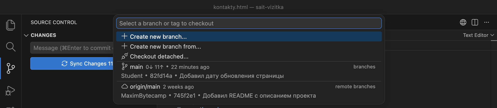
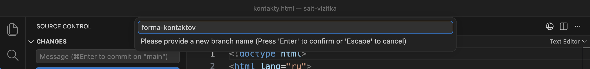
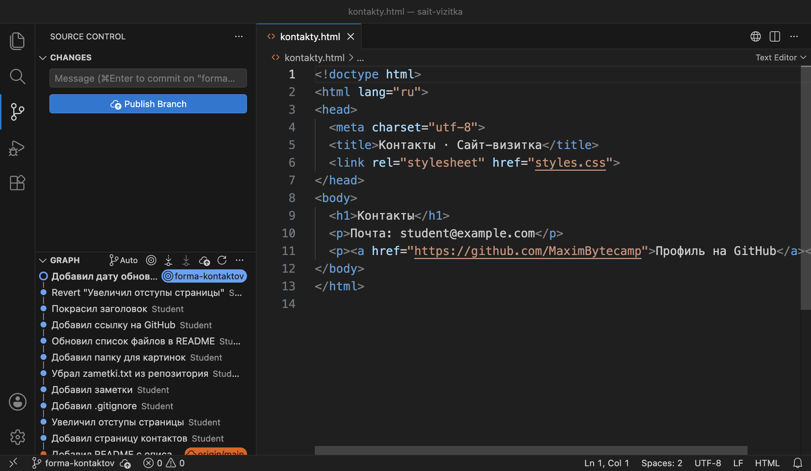
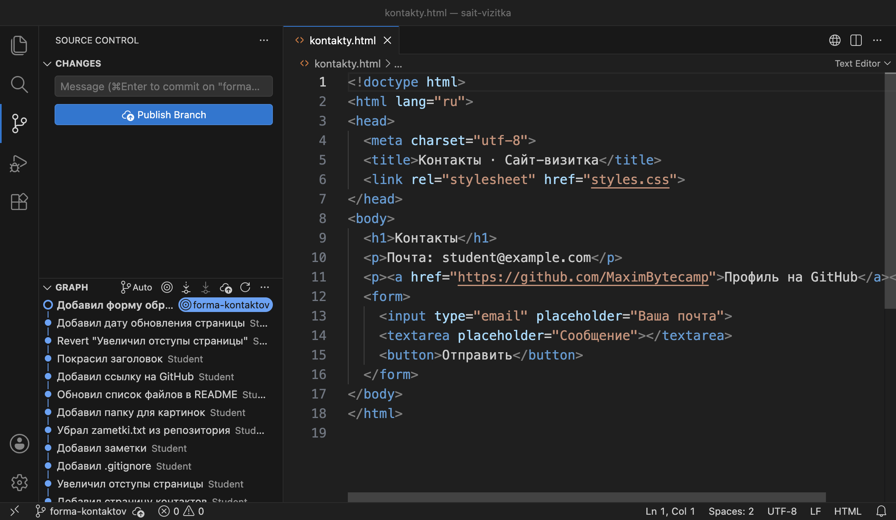
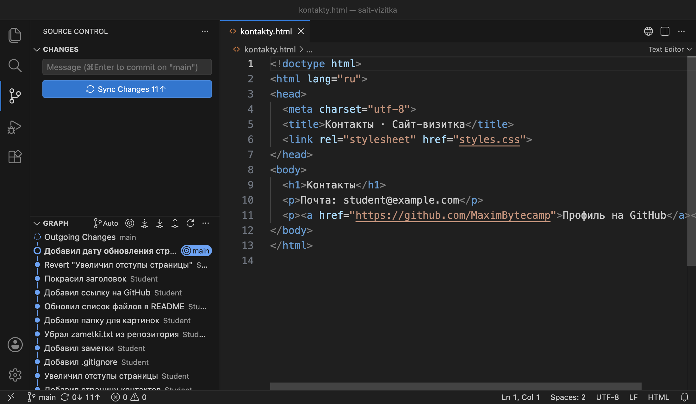
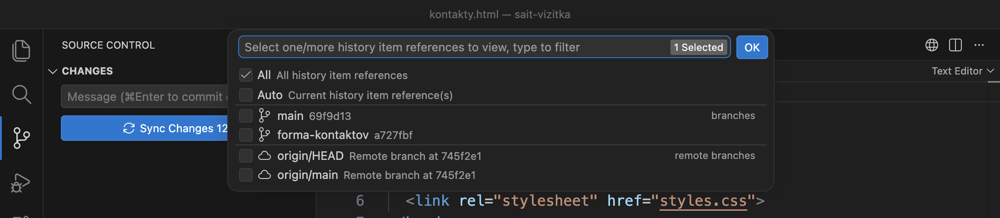
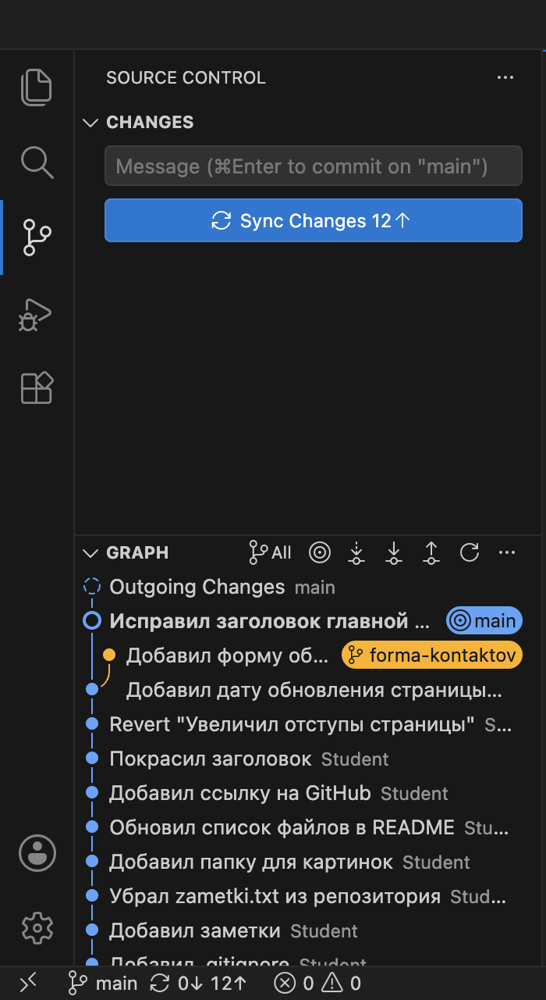
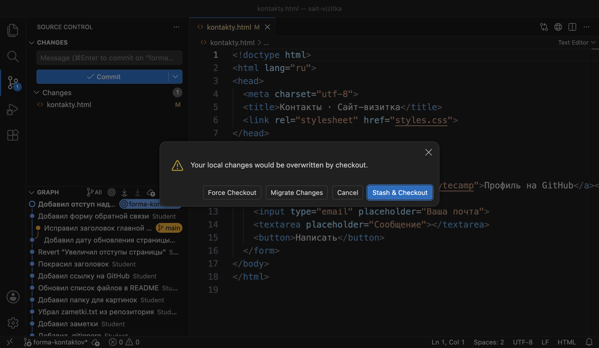
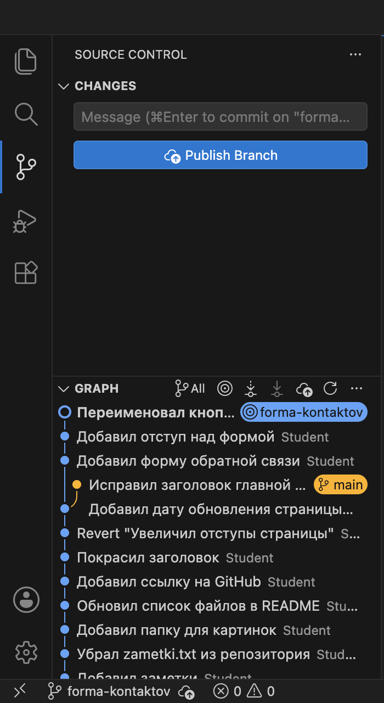

Справочник по Git и GitHub · модуль 3 · ветки
Глава 3.2
Вторая ветка:
создать, переключиться, проверить
В главе создаётся вторая ветка проекта sait-vizitka. В ней делается форма обратной связи, а в ветке main — отдельное исправление. На кадрах показано, как при переключении меняются файлы в папке и что происходит с правками, которые не закоммичены.
- Категория
- Ветки
- Уровень
- Начальный
- Что получится
- Две ветки с разными коммитами и умение переключаться между ними
- Сколько занимает
- Около тридцати минут за компьютером
§1Задача главы
В главе 3.1 на ветке main разобрано, что ветка — это имя, за которым записан один коммит, а в HEAD записано имя текущей ветки. В этой главе к main добавляется вторая ветка. Задача: добавить на страницу контактов форму обратной связи. Работа ведётся в отдельной ветке forma-kontaktov, чтобы незаконченная форма не попала в main.
Зачем это нужно в работе
- Начать задачу. Под новую задачу создают ветку и коммитят в неё. Основная ветка в это время не меняется.
- Прерваться на исправление. Срочную правку делают в основной ветке. Для этого на неё переключаются, а после исправления возвращаются к задаче.
- Сравнить два состояния. Переключение показывает проект с новой работой и без неё в одной и той же папке.
- Не потерять правки. Незакоммиченная правка при переключении либо переходит в другую ветку, либо останавливает переключение. Какой из двух случаев произошёл, видно по ответу Git.
В главе используется проект sait-vizitka в том виде, в каком он остался после главы 3.1: пятнадцать коммитов в ветке main, одиннадцать из них на GitHub не отправлены. Имена коммитов, сделанных вами, будут отличаться от показанных.
§2Шаг 1. Создать ветку
Ветка создаётся из списка веток, который открывался в главе 3.1.
Нажимаем на имя main в строке состояния и выбираем в списке Create new branch…

Вводим имя forma-kontaktov и нажимаем Enter:


forma-kontaktov. Файл kontakty.html не изменился.| Что изменилось в окне | Что это значит |
|---|---|
В строке состояния forma-kontaktov | VS Code создал ветку и сразу перешёл на неё |
В графе у верхнего коммита метка forma-kontaktov | Новая ветка стоит на том же коммите, что и main |
| Рядом с именем ветки значок облака со стрелкой | Ветки нет на GitHub, она есть только на вашем компьютере |
| Кнопка Publish Branch вместо Sync Changes | Кнопка отправляет новую ветку на GitHub. В этой главе её не нажимаем, отправка разобрана в модуле 4 |
В подсказке поля сообщения commit on "forma-kontaktov" | Следующий коммит попадёт в новую ветку |
То же в терминале. Ключ -c создаёт ветку, сама команда switch переходит на неё:
git switch -c forma-kontaktov
Switched to a new branch 'forma-kontaktov'
Что получилось.Создана ветка forma-kontaktov, вы стоите на ней. Файлы проекта не изменились.
§3Шаг 2. Проверить записи в папке .git
По главе 3.1 новая ветка — это новый файл в папке .git/refs/heads и новая запись в HEAD. Проверяем.
git branch * forma-kontaktov main ls .git/refs/heads forma-kontaktov main cat .git/HEAD ref: refs/heads/forma-kontaktov
Веток две, звёздочка стоит у forma-kontaktov. В папке два файла. В HEAD теперь записана новая ветка. Смотрим, на каких коммитах стоят ветки:
git branch -v
* forma-kontaktov 82fd14a Добавил дату обновления страницы
main 82fd14a [ahead 11] Добавил дату обновления страницы
Обе ветки стоят на одном коммите 82fd14a. Пока ветки различаются только именем.
HEAD указывает на forma-kontaktov.Что получилось.В .git/refs/heads два файла с одним и тем же коммитом, в HEAD записана ветка forma-kontaktov.
§4Шаг 3. Сделать коммит в новой ветке
Ветки начинают различаться после первого коммита. Делаем его в новой ветке.
В kontakty.html под ссылкой на профиль добавляем форму:
<p><a href="https://github.com/MaximBytecamp">Профиль на GitHub</a></p> </body>
<p><a href="https://github.com/MaximBytecamp">Профиль на GitHub</a></p>
<form>
<input type="email" placeholder="Ваша почта">
<textarea placeholder="Сообщение"></textarea>
<button>Отправить</button>
</form>
</body>
Сохраняем файл, отбираем его плюсом и делаем коммит с сообщением «Добавил форму обратной связи». То же в терминале:
git add kontakty.html git commit -m "Добавил форму обратной связи"

forma-kontaktov. В файле строки 12–16 — форма.Проверяем, на каких коммитах стоят ветки:
git branch -v
* forma-kontaktov a727fbf Добавил форму обратной связи
main 82fd14a [ahead 11] Добавил дату обновления страницы
Ветка forma-kontaktov сдвинулась на новый коммит a727fbf. Ветка main осталась на 82fd14a: коммит сдвигает только ту ветку, которая записана в HEAD.
forma-kontaktov перешла на a727fbf, main осталась на 82fd14a. HEAD указывает на forma-kontaktov.Что получилось.В ветке forma-kontaktov на один коммит больше, чем в main.
§5Шаг 4. Переключиться на main
Теперь переходим на ветку main и смотрим на тот же файл.
Нажимаем на имя ветки в строке состояния и выбираем в списке main. То же в терминале:
git switch main
Switched to branch 'main'
Your branch is ahead of 'origin/main' by 11 commits.
(use "git push" to publish your local commits)

main. В том же файле формы нет: после строки 11 сразу идёт </body>. В графе сверху коммит «Добавил дату обновления страницы».При переключении Git делает два действия:
| Действие | Что меняется |
|---|---|
Записывает в HEAD имя выбранной ветки | ref: refs/heads/main |
| Приводит файлы в папке проекта к последнему коммиту этой ветки | В kontakty.html пропали пять строк формы: в коммите 82fd14a их нет |
Форма записана в коммите a727fbf ветки forma-kontaktov и вернётся в файл при переходе на эту ветку. Папка проекта одна, а её содержимое зависит от ветки, на которой вы стоите.
В графе коммита с формой сейчас нет: раздел GRAPH по умолчанию показывает только текущую ветку.
HEAD: теперь она указывает на main. Файлы в папке соответствуют коммиту 82fd14a.Что получилось.Вы стоите на main. В папке проекта файлы без формы.
§6Шаг 5. Сделать коммит в main
Пока форма не готова, в main делаем отдельное исправление: меняем заголовок главной страницы.
<h1>Привет, это моя страница</h1>
<h1>Привет, это мой сайт</h1>
Сохраняем файл, отбираем его плюсом и делаем коммит «Исправил заголовок главной страницы». То же в терминале:
git add index.html git commit -m "Исправил заголовок главной страницы"
Теперь у каждой ветки есть коммит, которого нет в другой. Обе линии показывает команда git log с ключом --all:
git log --oneline --graph --all -4
* 69f9d13 Исправил заголовок главной страницы
| * a727fbf Добавил форму обратной связи
|/
* 82fd14a Добавил дату обновления страницы
* cd66804 Revert "Увеличил отступы страницы"
Ключ --graph рисует линии слева. От коммита 82fd14a вверх идут две линии: на левой коммит ветки main, на правой — коммит ветки forma-kontaktov. Ниже 82fd14a история общая.
82fd14a. Дальше у каждой ветки свой коммит. HEAD указывает на main.Что получилось.В main шестнадцать коммитов, на кнопке 12↑. Ветки разошлись: у каждой свой последний коммит.
§7Шаг 6. Показать обе ветки в графе
Раздел GRAPH можно переключить на показ всех веток.
В заголовке раздела GRAPH нажимаем на слово Auto. В списке отмечаем All и нажимаем OK:


git log --graph --all. Синяя метка — текущая ветка main, оранжевая — forma-kontaktov.Что получилось.В графе VS Code видны обе ветки и коммит, от которого они расходятся.
§8Шаг 7. Вернуться в ветку формы
Возвращаемся к работе над формой. Нажимаем на имя ветки в строке состояния и выбираем forma-kontaktov. То же в терминале:
git switch forma-kontaktov
Switched to branch 'forma-kontaktov'
Файлы в папке снова соответствуют ветке формы. Сравнение двух веток по файлам:
| Файл | На ветке main | На ветке forma-kontaktov |
|---|---|---|
kontakty.html | Формы нет | Форма есть, строки 12–16 |
index.html | Заголовок «Привет, это мой сайт» | Заголовок «Привет, это моя страница» |
Исправление заголовка сделано в main, поэтому в ветке формы его нет. Коммиты одной ветки не попадают в другую. Объединение веток разобрано в главе 3.3.
HEAD снова указывает на forma-kontaktov. Файлы в папке соответствуют коммиту a727fbf.Что получилось.Вы стоите на forma-kontaktov: в kontakty.html есть форма, в index.html прежний заголовок.
§9Шаг 8. Переключиться с незакоммиченной правкой
До сих пор перед каждым переключением список изменений был пуст. Проверим, что происходит с правкой, которая не закоммичена.
На ветке forma-kontaktov добавляем в конец styles.css отступ над формой и сохраняем файл. Коммит не делаем.
form {
margin-top: 24px;
}
Переключаемся на main, из списка веток в строке состояния или командой:
git switch main M styles.css Switched to branch 'main' Your branch is ahead of 'origin/main' by 12 commits. (use "git push" to publish your local commits) git status --short M styles.css
Переключение прошло, и правка осталась в файле. Первая строка ответа M styles.css сообщает об этом: изменённый файл перенесён на ветку main.
Незакоммиченная правка не записана ни в одной ветке. Она лежит в папке проекта. Файл styles.css в обеих ветках одинаковый, поэтому Git оставил его как есть. Если сейчас сделать коммит, отступ для формы попадёт в main, где формы нет.
Поэтому перед коммитом ветку проверяют по строке состояния. Возвращаемся в ветку формы и коммитим правку там:
git switch forma-kontaktov M styles.css Switched to branch 'forma-kontaktov' git add styles.css git commit -m "Добавил отступ над формой" [forma-kontaktov e3eeeb9] Добавил отступ над формой 1 file changed, 4 insertions(+)
forma-kontaktov второй коммит e3eeeb9. Ветка main не сдвинулась: переход на неё и обратно коммитов не добавил.Что получилось.Правка в styles.css закоммичена в ветке forma-kontaktov, в которой находится форма.
§10Шаг 9. Получить отказ в переключении
Если изменённый файл в двух ветках разный, Git переключение отменяет. Воспроизведём этот случай.
На ветке forma-kontaktov меняем в kontakty.html надпись на кнопке и сохраняем файл. Коммит не делаем.
<button>Отправить</button>
<button>Написать</button>
Переключаемся на main командой:
git switch main
error: Your local changes to the following files would be overwritten by checkout:
kontakty.html
Please commit your changes or stash them before you switch branches.
Aborting
Git сообщает: правки в kontakty.html будут перезаписаны при переключении, сначала сделайте коммит. Слово Aborting означает, что переключение отменено и вы остались на прежней ветке. Причина в том, что kontakty.html в двух ветках разный: в main формы нет. Чтобы привести файл к ветке main, Git должен был бы стереть вашу правку.
В VS Code то же действие, выбор main в списке веток, открывает окно с четырьмя кнопками:

kontakty.html, в файле строка 15 с новой надписью.| Кнопка | Что делает |
|---|---|
| Cancel | Отменяет переключение. Правка и ветка остаются как были |
| Stash & Checkout | Убирает правку во временное хранилище и переключается. Хранилище разобрано в главе 3.5 |
| Migrate Changes | Переключается и пробует перенести правку в другую ветку |
| Force Checkout | Переключается и стирает правку. Вернуть её нельзя |
Нажимаем Cancel. Правка относится к форме, поэтому коммитим её в текущей ветке:
git add kontakty.html git commit -m "Переименовал кнопку формы"
Правило для обоих случаев: перед переключением делают коммит, список изменений должен быть пуст.

forma-kontaktov три коммита, в main — один. Вы стоите на forma-kontaktov.main их нет, пока ветки не объединены.Что получилось.Список изменений пуст, вы стоите на forma-kontaktov. В main шестнадцать коммитов, в forma-kontaktov — восемнадцать: пятнадцать общих и три своих.
§11Справка: команды для веток
| Что нужно | В VS Code | Команда |
|---|---|---|
| Создать ветку и перейти на неё | Имя ветки в строке состояния → Create new branch… | git switch -c имя |
| Создать ветку и остаться на текущей | Кнопки нет | git branch имя |
| Перейти на ветку | Имя ветки в строке состояния → ветка в списке | git switch имя |
| Вернуться на предыдущую ветку | Кнопки нет | git switch - |
| Список веток | Имя ветки в строке состояния | git branch, с коммитами — git branch -v |
| Показать все ветки в истории | Раздел GRAPH → Auto → All | git log --oneline --graph --all |
В инструкциях и на форумах для тех же действий встречается команда git checkout: git checkout имя переходит на ветку, git checkout -b имя создаёт ветку и переходит на неё. Команда git switch появилась в Git 2.23 в 2019 году и делает только переключение веток. VS Code в своих сообщениях использует слово checkout: Select a branch or tag to checkout, Force Checkout.
§12Частые вопросы
.git/refs/heads, а при переключении Git меняет файлы в этой же папке.main форма удалена.forma-kontaktov. При переходе на эту ветку она возвращается в файл.HEAD. Её имя показано в строке состояния и в подсказке поля сообщения.§13Проверьте себя
Что меняется в папке .git после команды git switch -c forma-kontaktov?
В .git/refs/heads появляется файл forma-kontaktov с именем текущего коммита, а в HEAD записывается ref: refs/heads/forma-kontaktov. Файлы проекта не меняются.
Вы сделали коммит в ветке forma-kontaktov. Что стало с веткой main?
Ничего. Коммит сдвигает только ветку, записанную в HEAD. main осталась на прежнем коммите.
После перехода на main из kontakty.html пропала форма. Где она?
В коммите ветки forma-kontaktov. При переключении Git приводит файлы к последнему коммиту выбранной ветки, а в main формы нет. Команда git switch forma-kontaktov возвращает её в файл.
Вы изменили файл, не закоммитили и переключились на другую ветку. Git ответил строкой M styles.css. Что произошло?
Переключение выполнено, изменённый файл перенесён вместе с вами. Правка по-прежнему не закоммичена и лежит в папке проекта. Коммит попадёт в ту ветку, на которой вы стоите сейчас.
Git ответил Your local changes … would be overwritten by checkout и Aborting. Что делать?
Переключение отменено, вы на прежней ветке. Файл с правкой в двух ветках разный, и Git не стал её стирать. Нужно закоммитить правку в текущей ветке и переключиться снова.
Как увидеть в одном списке коммиты обеих веток?
В терминале: git log --oneline --graph --all. В VS Code: в заголовке раздела GRAPH нажать Auto, отметить All и нажать OK.
§14Шпаргалка по главе
строка состояния → Create new branch…
git switch -c имя
строка состояния → ветка в списке
git switch имя
git switch -
HEAD → имя ветки
файлы → последний коммит ветки
git branch -v
cat .git/HEAD
git log --oneline --graph --all
Auto — текущая ветка
All — все ветки
список изменений пуст
правку коммитят в своей ветке
Force Checkout стирает правки
Итог главы
Ветку создают из списка веток в строке состояния или командой git switch -c. Новая ветка стоит на том же коммите, что и текущая, файлы проекта при этом не меняются. Коммит сдвигает только ветку, записанную в HEAD, поэтому после первого коммита ветки расходятся. При переключении Git записывает в HEAD имя выбранной ветки и приводит файлы в папке к её последнему коммиту: форма есть в файле на ветке forma-kontaktov и отсутствует на main. Обе ветки показывает git log --oneline --graph --all и раздел GRAPH в режиме All. Незакоммиченная правка не записана ни в одной ветке: при переключении она переходит вместе с вами, а если файл в ветках разный, Git переключение отменяет. Поэтому перед переключением делают коммит. В следующей главе ветку forma-kontaktov объединяют с main.
- Кадры и ответы команд получены на клоне проекта sait-vizitka в Git версии 2.51.1 и VS Code версии 1.138.
- Команды
git switchиgit branch— документация git-switch и git-branch. - Команда
git checkoutи перенос незакоммиченных правок при переключении — документация git-checkout. - Появление
git switchв версии 2.23 — заметки к выпуску Git 2.23. - Создание веток, список веток и раздел Graph — документация VS Code, раздел Source Control.